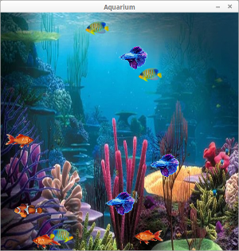

Python Projects
This summer I've been spending a lot of time with Python,
and am becoming quite confident with the language. This page will serve as a sort
of portfolio, with the source code available here.
This page is incomplete.
19-21 August 2019
Aquarium

A simple aquarium made with PyGame and the random library. When run, a window will
appear, and a random number of fish, each with a random breed, start point, and speed,
will appear. If a fish hits the edge of the screen, it will turn around; furthermore,
each game cycle (50 milliseconds) each fish has a 1% chance of changing direction on
its own. Aquarium noises play in the background. I feel like this program was my first
really meaningful use of object-oriented programming, as the fish spawning would have been
very difficult without simply creating instances of a class.